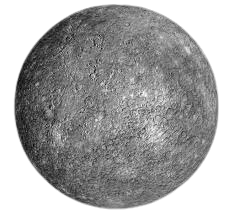

Mercurio es el planeta más pequeño de nuestro sistema solar. Simplemente, es un poco más grande que la Luna de la Tierra. Es el planeta más cercano al Sol, pero no es realmente el más cálido (Venus es el más cálido).
